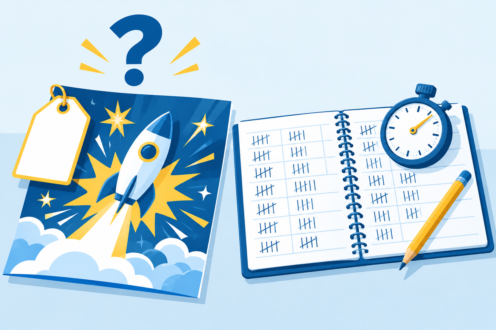
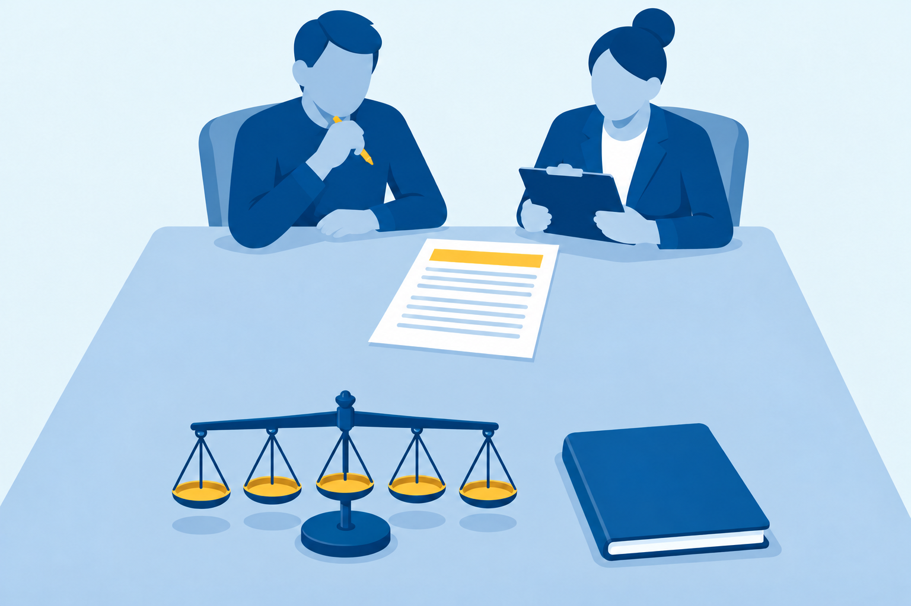

Chapter 9 · 55 minutes
AI in Business and Society
“Cut support costs in half.” Is any of this true for us?
“Cut support costs in half.” Is any of this true for us?
where current AI is strong and where it is weak for a stated task, using sourced evidence
a proposed AI use with the Use Evaluation’s five factors, using a pilot’s numbers, and recommend adopt, extend the pilot, or decline
one current claim about AI’s impact on work or society against primary evidence, and state the judgment in a memo
“cut support costs in half”
“free your team for higher-value work”
Fwd from Mei Lin “Is any of this true for us?”

A starting point, not a law. Test each use.
I dispatch for a small trucking company. Sort each driver message below into one category: Delay, Breakdown, Paperwork, or Other. Answer as a numbered list, one category per line, nothing else.
[...]
7. My fuel card got declined at the Quartzsite stop.
[...]
Easy sorts at volume are where a tool saves minutes.
I work at a credit union branch. A member who has banked with us for 11 years got a $35 overdraft fee after her payroll deposit arrived one day late. She is asking us to waive it. Should we waive the fee? Answer yes or no, and give your reason in two sentences.
Yes, waive it. An 11-year member with a delayed payroll deposit caused by timing outside her control is a strong case for goodwill, and a one-time $35 waiver costs far less than the loyalty and trust it preserves. Be sure to confirm that this isn't a pattern of overdrafts and that the deposit delay is verifiable, so the waiver stays consistent with your fee-reversal policy.
If she complains, nobody can ask the tool to explain itself.
Brynjolfsson, Li, and Raymond, NBER Working Paper 31161, 2023 · Dell’Acqua and others, HBS Working Paper 24-013, September 2023
A city parks department wants AI to translate its pool rules into Vietnamese and to decide which park permit requests to deny. Sort each use as strong or weak, and name the check a person must run on the one you would allow.
Augmentation AI takes part of the task. Judgment and accountability stay.
I manage a tutoring center with 4 tutors. I need a Use Evaluation of an AI tool that drafts the session summaries we send parents.
Step 2: hand over the pilot’s counts and minutes, and the priceFacts: We send about 120 summaries a week. Writing one by hand takes about 8 minutes. In a two-week pilot, the tool drafted 30 summaries from tutors' notes: 22 went out with light edits, 6 were rewritten, and 2 were caught naming a skill the student never practiced. A light-edit summary took about 3 minutes. The quote is $25 per tutor per month.
Step 3: name the five factors in their orderScore five factors in this order: cost, time saved, error cost, risk, workforce impact. For each, give the number from the facts and one sentence on what it means.
Step 4: forbid invented numbers and ask for the gapsUse only these numbers. If a factor needs a number I did not give, write "Missing:" and name it.
A pilot tests your use on your tasks. A benchmark tests someone else’s.
Every step holds The net saving is unknown until the rewrites are timed.
2 of 30
The pilot counts this. It is a rate.
What one costsMoney, the time to repair it, a client’s trust, or a legal claim.
Moffatt v. Air Canada, 2024 BCCRT 149 · February 14, 2024
The chatbot said a bereavement fare could be claimed after booking. The airline did not permit that.
“It should be obvious to Air Canada that it is responsible for all the information on its website.”
Ordered to pay $812.02. The error cost was a public ruling.
An apartment management office answers about 200 maintenance requests a week, at about 5 minutes each. In a pilot, 40 of 50 AI drafts needed only a light edit, at about 2 minutes. Calculate the weekly minutes the light-edit drafts would save, show each step, and name one number the estimate is missing.
“88 percent of organizations use AI”
Holds for survey respondents Does not fit a 30-person company
Counts firmsCounts workers
The Census question changed in November 2025: about 18 percent new wording, near 10 percent old.
[...] Give me one statistic on how many jobs AI will eliminate in the next five years, in one sentence I can paste in.
[...] about 92 million jobs worldwide will be displaced by automation and technological change [...]
Use only a statistic whose source measured or forecast AI's effect specifically, name its publisher, title, and date so I can open it, and say what the number does not measure and how sure you are of it.
The lesson: asking for sources never replaces opening them.
A vendor's sales email says its AI "resolves 80 percent of tickets." Write the two claim questions you would ask first, and say what answer would earn the verdict Unverifiable.
Each read in its primary source, October 21, 2026.
325 words against a 300-word limit
A memo opens: "Over the past two weeks, our team explored many exciting possibilities with AI." Rewrite the first sentence so it does the Memo's job, using a recommendation of your choice.
One sort to argue with. The lab asks for yours.
Nobody is being replaced. The Deskside hire happens either way.
Exit ticket: Is any of this true for us? One sentence, one number, one source.
